One modern interface for Final Fantasy XI: thin glowing bars, one clean font everywhere, and every piece placed exactly where you like.
In a real fight on CatsEyeXI. Click the video to pause it.
Every piece in both styles, side by side. Pick one to look at.
Job tag in its role colour, HP, MP and TP at a glance, with each member's buffs and their time left beside them. A member under 30% HP trembles and beats red.
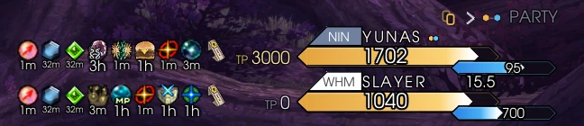
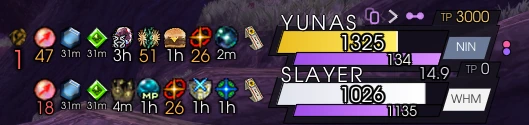
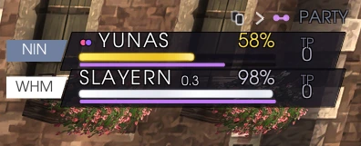
When your party opens a chain, YunaUI shows the weapon skills that close it and the skillchain each one makes, best on top.
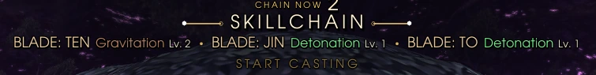
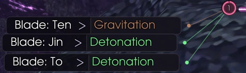
The target's name, distance, level range and HP, with what it's casting right underneath. Target a party member and it shows their HP, MP and buffs instead.
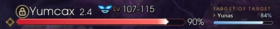
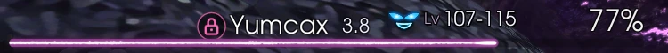
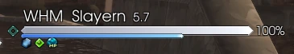
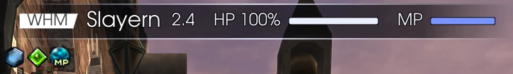
Your Ctrl and Alt macros on two clean rows, the book and page on top, each key named, and the one you press lights up.
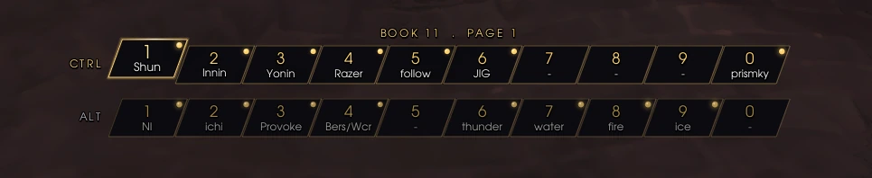
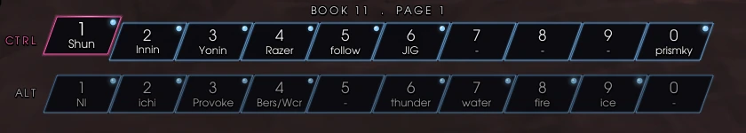
Everyone's damage and share of the fight, with the fight timer. Click a name for details, or switch to the enmity view to see who has hate.
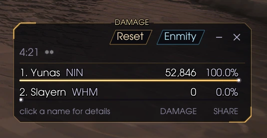
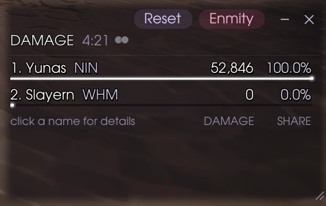
Everything together, in a real fight in Yorcia Weald.
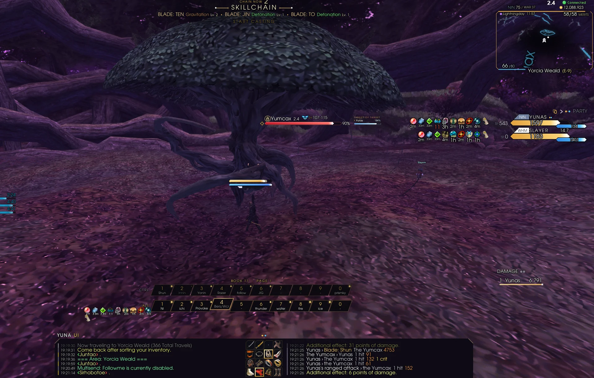
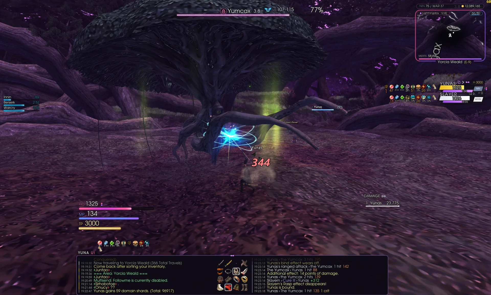
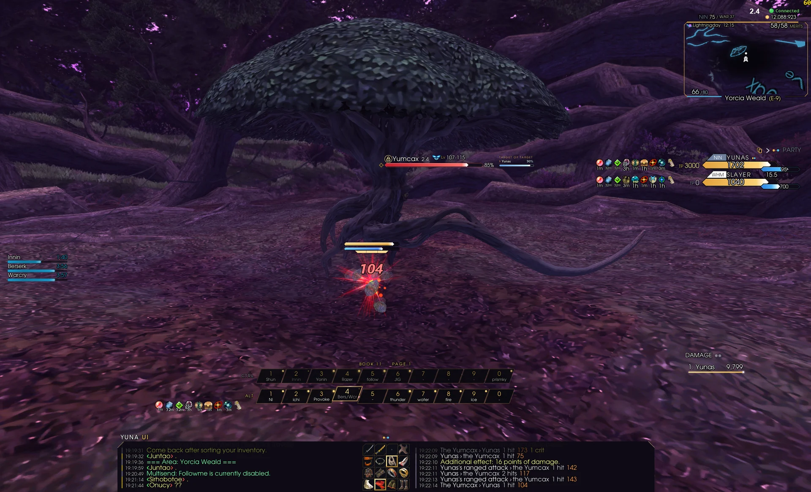
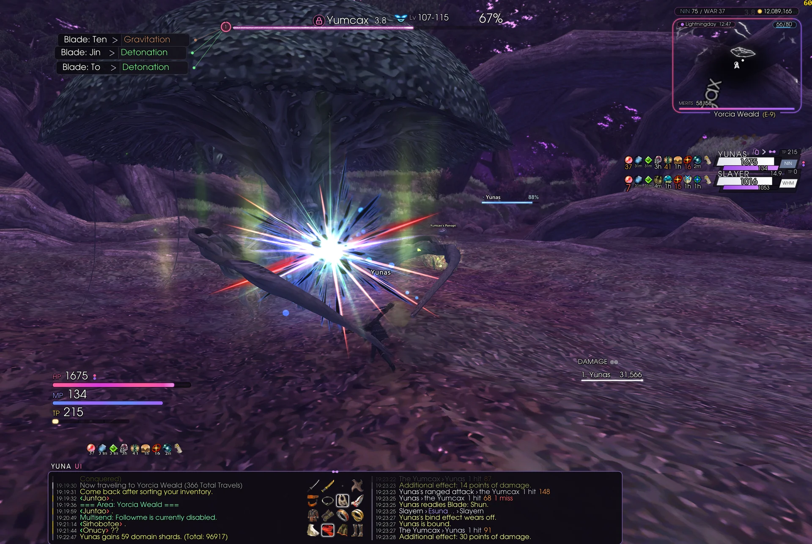
YunaUI replaces the game's target window, party and alliance lists and chat log with pieces that share one look, and puts the game's own back the moment you turn a piece off.
A glowing white line in a magenta band with the target's distance, what it's casting or readying, and its buffs and debuffs with time left.
When your party opens a chain, a fan shows your weapon skills that close it, best on top.
When a skillchain lands: the chain, the elements to burst with, and the time left.
Job tag in its role colour, HP, MP and TP. Members under 30% HP tremble and beat red. Click a job tag to fold their buffs.
See who it's hitting, and click any monster in the list to target it.
HP / MP / TP bars you can anchor together, plus a cast bar, EXP, gil and bag.
Your pet's HP / MP / TP, its ability timers and what it's fighting.
Recast timers for your abilities and spells.
Your 16 equipped items in HD, lighting up whenever you swap gear.
The meter formerly known as YunaDPS, with an enmity view.
Channel tabs, an optional combat log anchored beside it, timestamps and saved logs.
Every piece on a grid: drag and it snaps into line. Ready-made layouts plus five of your own. Stays on screen at any resolution.
Hi, I'm Yunas, a Final Fantasy XI player since the retail days.
I quit retail around Treasures of Aht Urhgan, and about three years ago I came back to Vana'diel on CatsEyeXI. I've been having a lot of fun there ever since, and YunaUI is what came out of it: the interface I always wanted for the game.
I'm a gamer through and through. My background is competitive FPS, and over the years I've played more than 500 games, so I know what a good HUD feels like: you read it at a glance and never fight it. I'm also a software developer, and I build and maintain YunaUI myself, fixing what the community reports.
Questions, ideas, or found a bug? Message me on Discord or send an email.